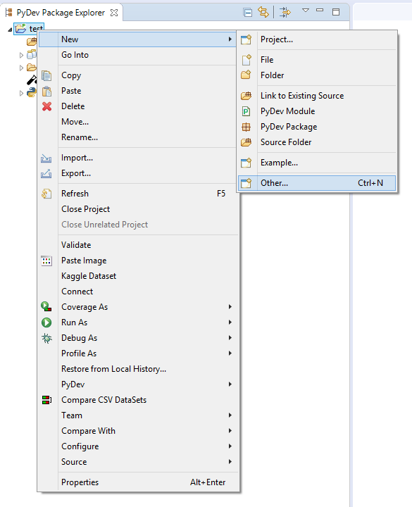
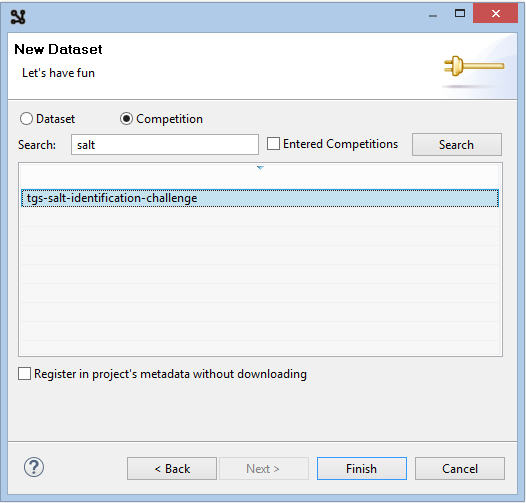
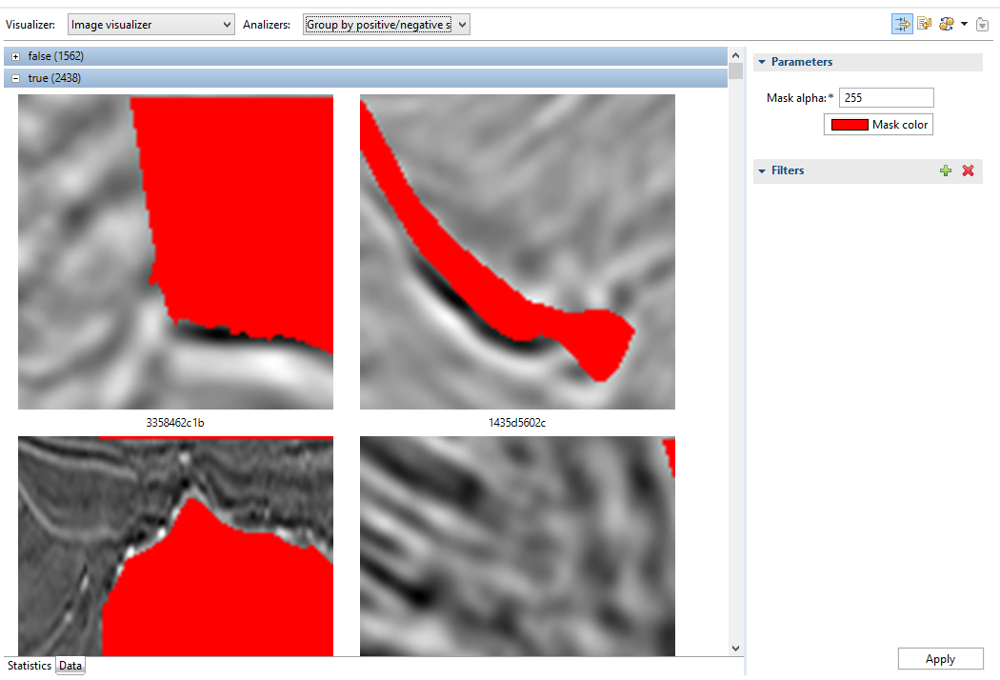
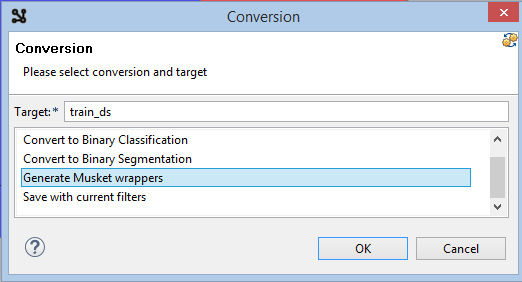
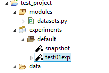
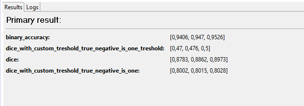
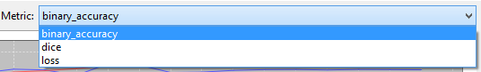
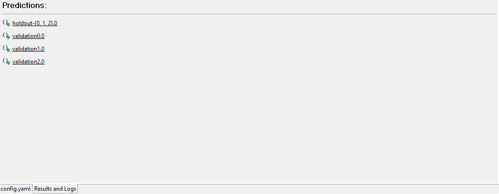
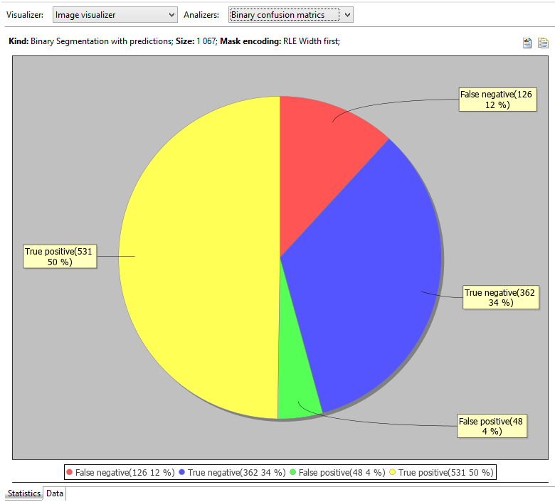
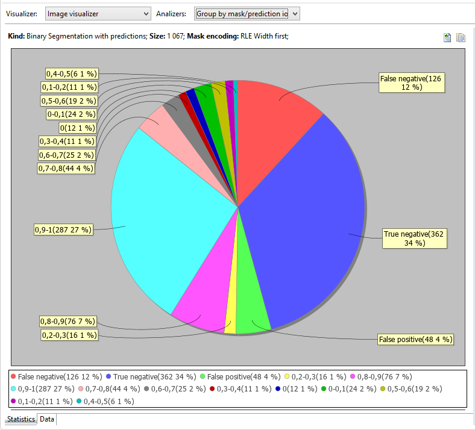

Getting started
Download
Download Musket IDE for Windows
Nightly builds:
We publish nightly build to the Source forge
Installation
Install all of Musket ML Python packages. Read installation instructions here.
Note: if only Generic pipeline package of Musket ML is installed, you way also consider to Install Segmentation Pipeline, Classification Pipeline and Musket Text.
Unzip and launch executable (ds-ide.exe for Windows and ds-ide for MacOS).
Watch this in action
Most of the following contents can be also checked in action in this video.
Setting up a project
Launch File->New... from the main menu.
Choose Musket->Musket Project in the New dialog.

Click Next, enter new project name and click Please configure an interpreter... to set up python interpreter.
Try Config first in PATH option first, if it fail o auto-detect you python, use other options.

Click Finish and accept opening the new perspective.
This will create the project structure for you, details regarding the structure can be found here.
Getting dataset from Kaggle
Installing kaggle stuff
This should be done only once, first time you are getting something from Kaggle.
Run pip install kaggle in console.
Log into Kaggle
Click on a profile in the top-right corner and choose My Account
On the account page find Api section and click Create New API Token.
This will launch the download of kaggle.json token file.
Put the file into ~/.kaggle/kaggle.json or C:\Users\<Windows-username>\.kaggle\kaggle.json depending on OS.
Note: there are potential troubles of creating C:\Users\<Windows-username>\.kaggle using windows explorer.
To create this folder from console, run cmd and launch the following commands:
cd C:\Users\<Windows-username>, mkdir .kaggle.
Consult to Kaggle API in case of other troubles.
Downloading the dataset
Back to IDE. Select your new project root in project explorer, right-click and select New->Other...

Choose Musket->Kaggle Dataset.

Click Next and select competition, enter salt into a search box and click Search.

Select tgs-salt-identification-chellenge and click Finish.
This will start dataset download, check its progress in console.
Analysing dataset
In project explorer, double-click on the newly downloaded train.csv

Dataset editor displays CSV contents statistics, if the data is recognizable.

Analyzers combo allows to switch between dataset analysis modes.

In this simple binary segmentation there is an only suitable analyzer, but in other uses cases there are more.
So, the statistics on the screenshot is the output of the analyzer.
Besides that, analyzer also splits and sorts data, and we can see that on data tab.
Visualizers are used to display that data, in our case, as we got raw images, there is an only visualizer.

Masks are also displayed.
Creating an experiment
Following should be done to make an experiment from the dataset:
Click the Generate button in the toolbar in the top-right corner of the viewer.

Choose a name like train_ds and Generate Musket Wrappers, click Ok.

Accept to configure an experiment, enter any name like exp01 and click Finish.
You now have exp01 folder inside experiments folder and config.yaml file there.
datasets.py is also generated inside modules folder.
Editing an experiment
We've got a default experiment for binary segmentation generated in the previous chapter.
You can always find it in project explorer:

Its contents can be edited by double-clicking on the experiment. 
Lets make some minor changes to experiment code.
Change the shape to be well eaten by the network to:
Change shape instruction for shape: [224,224, 3]
Lets reduce the count of folds from default 5 to 3 to speed things up:
Add folds_count: 3 instruction to the root level.
Add some holdout so we can track the effectiveness of the trained experiment:
Add testSplit: 0.2 instruction to the root level.
And add an instructions to dump validation and holdout predictions to CSV right after the training.
Add dumpPredictionsToCSV: true instruction to the root level.
Running an experiment
Click on Launch experiment in the tool bar of the editor.

This should launch an experiment, you can track what's going on in the console.
Checking results and logs
When the experiment is finished, overal statistics should appear in the Results and logs tab:

It must also generate summary.yaml file in the experiment folder and metrics*.csv files in metrics subfolder.
Check these files, they contain lots of useful statistics.
Logs tab display logs in graphical form.

Log combo switches between different logs we got, in our case there is one per fold.
We've got following metrics declared in the experiment YAML code:
metrics: #we would like to track some metrics
- binary_accuracy
- dice
So the Metric combo lists all of them (for the specific fold) and loss:

Checking predictions
As we dumped our validation and holdout predictions to CSV by adding
dumpPredictionsToCSV: true instruction to the root level of our YAML,
now we have a bunch of CSV files in the predictions folder of our experiment.
You can use those files directly, our just click the links that appear on the Results and logs/Results tab:

This opens up the viewer with visualizers and analyzers that we already seen, this time for particular prediction.
Statistics tab, as usual, displays some chart. 
Check out Analyzers combo, this time there are more of them.

Data tab, which grouping is affected by the current analyzer displays samples with mask and prediction.

What is next
Check the videos to find out what else can be done using Musket IDE: tutorials.